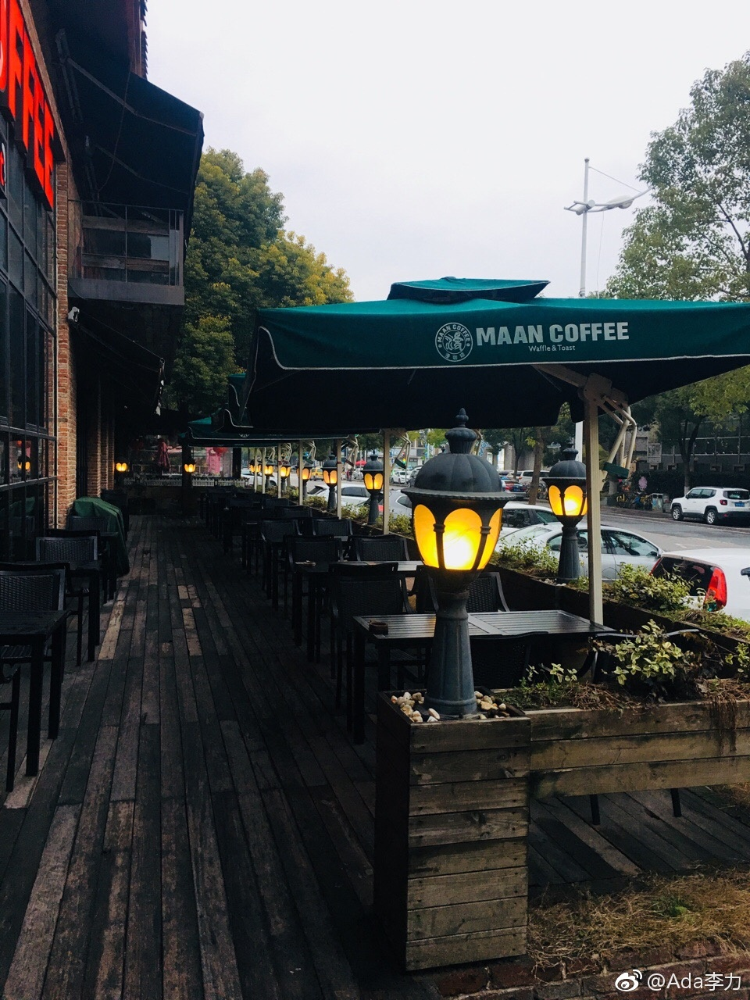

@Ada李力:
从豫园出来后，姐姐提出去住处附近的漫咖啡坐坐，很执着。后来才知道她上次就想跟慧慧一起来、慧慧说咱俩去那喝咖啡有什么意思，姐姐觉得一个人去更没意思，于是作罢。
我觉得奇怪，你想去，一个人去就可以了，为什么一定要有人陪呢？姐姐说她就喜欢有人陪，
我想了想自己刚到北京单身一个人时，也曾想去酒吧，那时觉得一个人去古怪，周围朋友又都跟我一样不泡吧的，也是做罢。等我一个人觉得哪里都可以去的时候，酒吧已经对我失去了吸引力，大概也是因为跟同事朋友去过的几次都觉得颇无聊。
七零后女性有蛮多相似地方。同龄的柔柔妈妈有次提起从来没进过酒吧，老公去也没带她。我当时就跟她约了去后海一趟，随便找家酒吧进去，点了酒，听了乐队几首歌后，就晃出来了。这么简单一个事情，跨越过去貌似要很多年。
抛掉需要有人陪的观念，会发现可以去玩去探索的地方，简直太多了。自我限制往往来自脑子里的旧思维，早去除早日得自由哈。 上海·coffee 金汇南路店 Maan coffee
上海·coffee 金汇南路店 Maan coffee
我觉得奇怪，你想去，一个人去就可以了，为什么一定要有人陪呢？姐姐说她就喜欢有人陪，
我想了想自己刚到北京单身一个人时，也曾想去酒吧，那时觉得一个人去古怪，周围朋友又都跟我一样不泡吧的，也是做罢。等我一个人觉得哪里都可以去的时候，酒吧已经对我失去了吸引力，大概也是因为跟同事朋友去过的几次都觉得颇无聊。
七零后女性有蛮多相似地方。同龄的柔柔妈妈有次提起从来没进过酒吧，老公去也没带她。我当时就跟她约了去后海一趟，随便找家酒吧进去，点了酒，听了乐队几首歌后，就晃出来了。这么简单一个事情，跨越过去貌似要很多年。
抛掉需要有人陪的观念，会发现可以去玩去探索的地方，简直太多了。自我限制往往来自脑子里的旧思维，早去除早日得自由哈。
- 